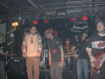

|
En una de esas noches de calorcito, con ese olor dulzón en el aire y anunciando la llegada de la primavera, el abasto nos esperaba. Con unos porroncitos encima partimos para La Esquina, donde se presentaba La Coca Fernandez. Mientras nos acercábamos se percibía algo raro en el ambiente, esta iba a ser una noche distinta y se lo podía palpitar.
A media noche entramos, las puertas acababan de ser abiertas y el público ingresaba de a poco; no querían quilombo…
El show lo inauguró a la una de la matina Dale Roska, una banda que ciertamente se las trae. Con un escenario lleno de cuadraditos negros y blancos, muchas gorras y boinas y un ritmo infernal hicieron un espectáculo digno de elogiar. Con su ska erizaron las pieles y encendieron la llama del público, y no es para menos, hubo un tema homenaje a los 30.000 desaparecidos en la dictadura militar; covers de los Cadillacs y Ska-p; y sobretodo mucha música y baile. Después de 40 minutos de puro ska se despidieron…
La gente se tomo un recreito, para chupar unas cervecitas, fumar, y tomar un poco de aire. Entre el público se divisaban algunas presencias de valor tomando algo y charlando… eran los músicos de Callejeros.
Siguiendo el espectáculo le llegaba el turno a Papas Ni Pidamos, una banda porteña que lleva 5 años en los escenarios; con su reggae y ska fueron los encargados de continuar la fiesta en el abasto. Un show lleno de energía, de vibraciones, de luces y de colores. La verdad que era un flash verlo al Pelado con su boinita bailando y cantando a mas no poder, acompañado por la banda que sonaba increíble. ¡Al fin unos porteños buena onda loco! Después de tocar 13 temas se despidieron aplaudidos como si fueran los más cordobeses del lugar…
Llego la hora de otro break, en el que aprovechamos para darnos una vuelta por el camarín y saludar a los chicos de Buenos Aires y a los muchachos de Dale Roska que habían tocado antes. La Coca se acercaba al escenario…
Como de costumbre la banda empezó a formar y uno a uno fueron subiendo los 13 músicos que componen La Coca Fernandez; el público se acercó cada vez más al escenario demostrando su ansiedad… la noche estalló en baile, gritos, humo, power ska y mucha, muchísima, adrenalina… El grupo volvía a tocar en La Esquina del Abasto moviendo a su gente que seguió todas las indicaciones de Sergio, el cantante de la banda. Los vientos estremecieron las paredes, el bajo y las violas hicieron resonar los oídos y la percusión parecía invocar algún demonio. Sonaron temas clásicos como: Los borrachos, Rastaman y Plegaria de mi tierra. Como siempre la banda tuvo invitados, pero esta vez hubo una sorpresa. Después de compartir el escenario con Gustavo, el cantante de Dale Roska; el Pelado, cantante de Papas Ni Pidamos;y con Edu y Juancho, bata y saxo de Callejeros; llegó la visita más esperada de la noche… subió a escena el "Pato" Fontanet, cantante de Callejeros, quien le regaló un reggea a la gente. Culminó una noche espectacular de esas que van a quedar en la memoria grabada de por vida. Uno de esos momentos que los viviste en carne propia y pasan los minutos, las horas, los días, y todavía no sabes si fue verdad o solo fue fiebre de ska-bado por la noche. |
|